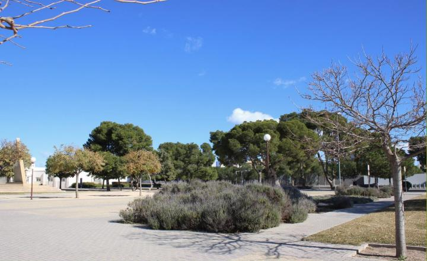
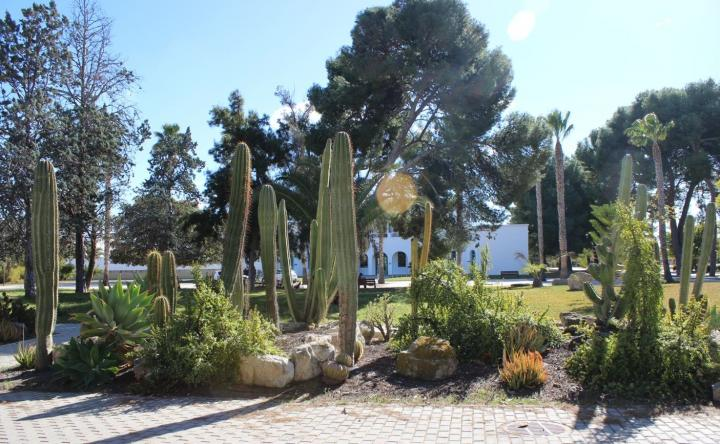
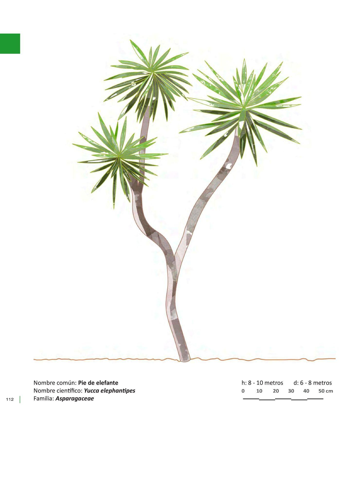
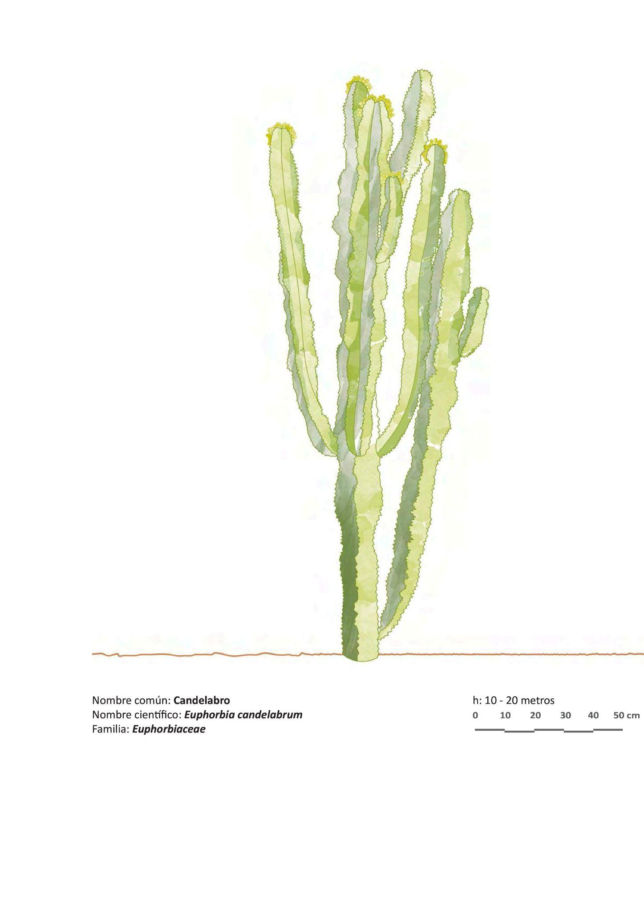
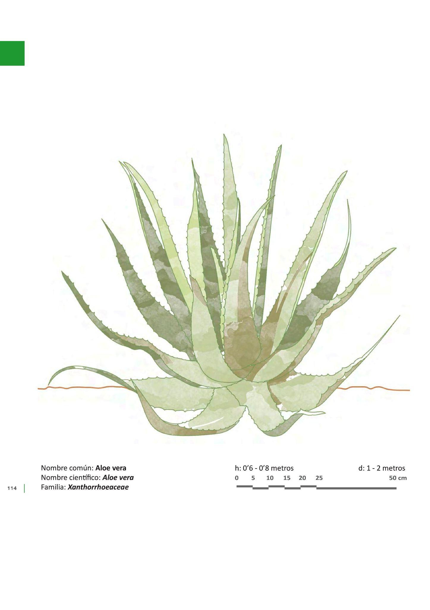
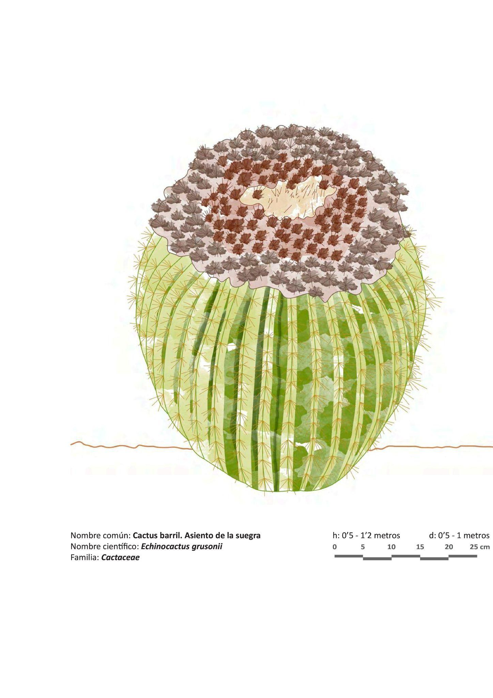
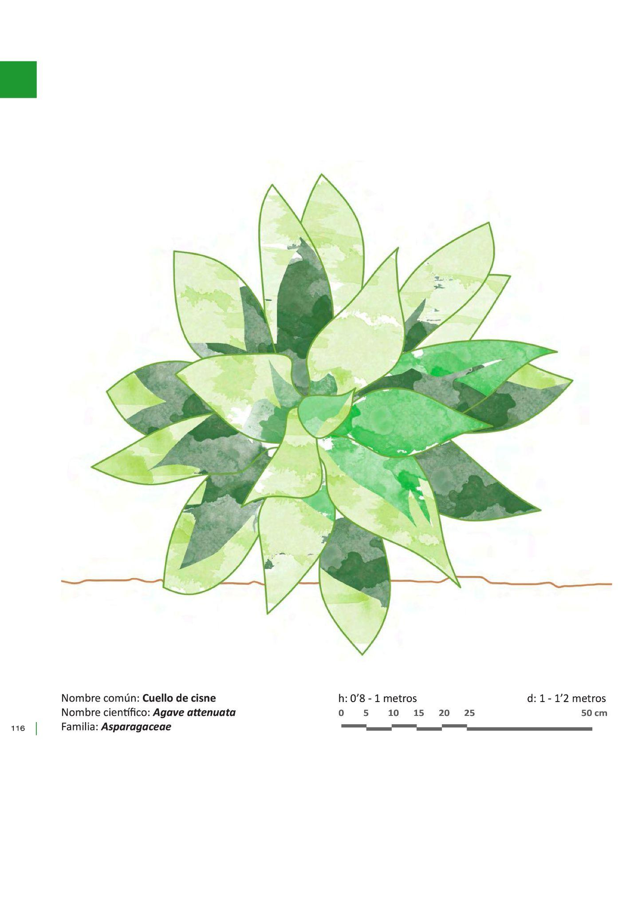

PARADA 3. AROMÁTICAS Y CACTÁCEAS.
Como te hemos comentado anteriormente, una de las ramas de la Geografía Física es la Biogeografía, es decir, el estudio de la distribución de la flora y de la fauna en el planeta. Para ello, es necesario conocer los factores que determinan o condicionan esa distribución. Además, la Geografía tiene en cuenta:
el aprovechamiento y usos de la flora y de la fauna por el ser humano a lo largo de la historia,
aquellas especies catalogadas como raras, endémicas o amenazadas que requieren una especial gestión y medidas de conservación,
así como las consecuencias del cambio climático
En el campus de la UA hay una gran diversidad de especies vegetales autóctonas y alóctonas, como ya hemos visto en las paradas anteriores. Nos vamos a fijar en algunas de ellas, en sus adaptaciones a las condiciones y características del medio que habitan, y en el uso tradicional del que han sido objeto.
En esta parada podemos observar a un lado las especies aromáticas, y al otro las cactáceas.
Las plantas aromáticas: especies mediterráneas adaptadas a un clima de escasas precipitaciones y temperaturas suaves en invierno y elevadas durante el estío. Algunas de esas adaptaciones son: hojas estrechas, márgenes revolutos, recubiertas de pilosidades o resinas. Sus aprovechamientos son fundamentalmente medicinales o culinarios.

web.ua.es/es/ecocampus/biodiversidad/flora/senda-paisajistica.html
Lavandula dentata L. (http://herbarivirtual.uib.es/es/comunitat-valenciana/77/especie/lavandula-dentata-l-)
Salvia rosmarinus (L.) Schleid (http://herbarivirtual.uib.es/es/comunitat-valenciana/526/especie/rosmarinus-officinalis-l-)
Santolina chamaecyparissus L. subsp. squarrosa (DC.) Nyman (http://herbarivirtual.uib.es/es/comunitat-valenciana/2019/especie/santolina-chamaecyparissus-l-subsp-squarrosa-dc-nyman)
El grupo de los cactus o cactáceas son especies que están adaptadas a climas de escasas precipitaciones. Por este motivo, acumulan agua en su interior: en tallos, en hojas e, incluso, en las raíces.

web.ua.es/es/ecocampus/biodiversidad/flora/senda-paisajistica.html
Yucca elephantipes (Centro América, se comen los pétalos y brotes tiernos)
Euphorbia candelabrum (endémica del Cuerno de África, usada en medicina tradicional en Etiopía contra la sífilis)
Aloe vera (probable origen en Arabia, de múltiples usos, considerada invasora en algunos países)
Echinocactus grusonii (endémico del centro de México y, prácticamente, extinta allí)
Agave attenuata (procedente de México, es muy rara; muy usada en jardinería; es característica por la inflorescencia caída cuando pasa la época)
Euphorbia balsamifera (se extiende desde Canarias hasta la península arábiga; los guanches usaban el látex para limpiarse los dientes) https://www.biodiversidadcanarias.es/biota/especie/F02227
Euphorbia canariensis (endémica de las Islas Canarias, es el símbolo de Gran Canaria, uso medicinal del látex, plata seca para obtener carbón, ahumado del queso, confección de cestos, látex para aturdir a los peces y pescarlos fácilmente) https://www.biodiversidadcanarias.es/biota/especie/F00766





Más información en: